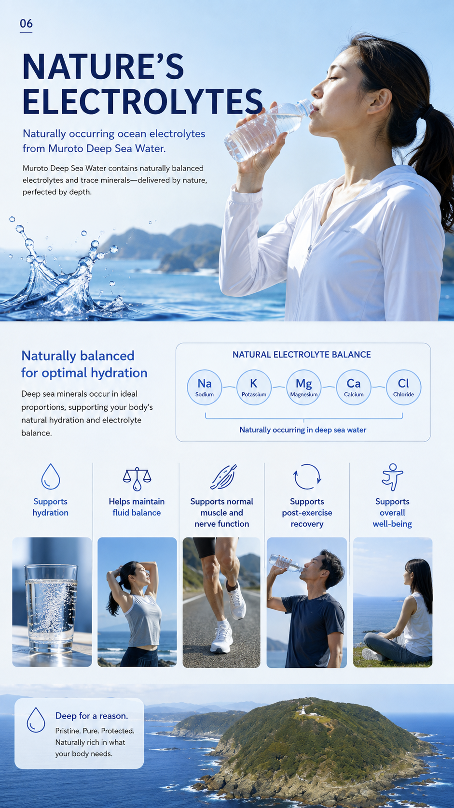
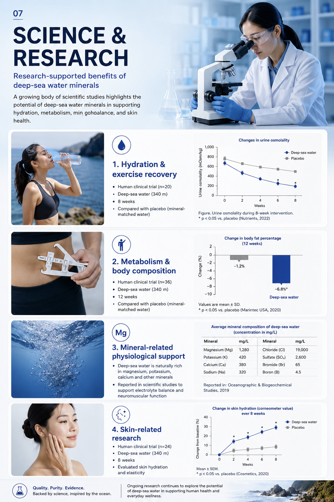

Supports hydration

Deep Sea Water Benefits
Naturally occurring ocean electrolytes from Muroto Deep Sea Water.
Muroto Deep Sea Water contains naturally balanced electrolytes and trace minerals, delivered by nature, perfected by depth.
Deep sea minerals occur in ideal proportions, supporting your body’s natural hydration and electrolyte balance.
Naturally occurring in deep sea water

Pristine. Pure. Protected. Naturally rich in what your body needs.
Deep Sea Water Benefits
Research-supported benefits of deep-sea water minerals
Scientific studies explore the potential of deep-sea water minerals in supporting hydration, metabolism, mineral balance, and skin health.

| Mineral | mg/L | Mineral | mg/L |
|---|---|---|---|
| Magnesium (Mg) | 1,280 | Chloride (Cl) | 19,000 |
| Potassium (K) | 420 | Sulfate (SO4) | 2,600 |
| Calcium (Ca) | 380 | Bromide (Br) | 65 |
| Sodium (Na) | 320 | Boron (B) | 4.5 |
Source label in supplied artwork: Oceanographic & Biogeochemical Studies (2019).
Quality. Purity. Evidence.
Backed by science, inspired by the ocean.
Ongoing research continues to explore the potential of deep-sea water in supporting human health and everyday wellness.